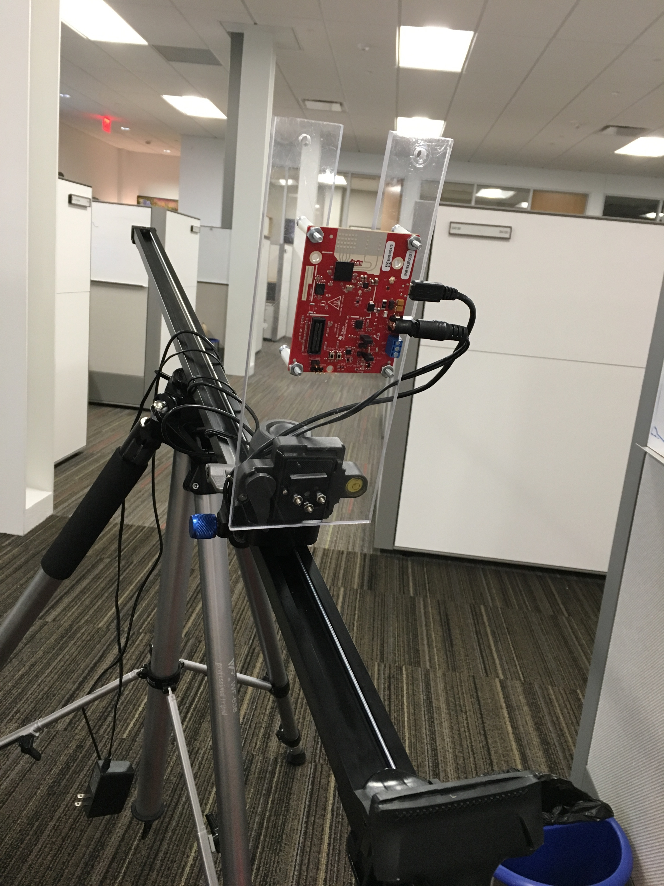
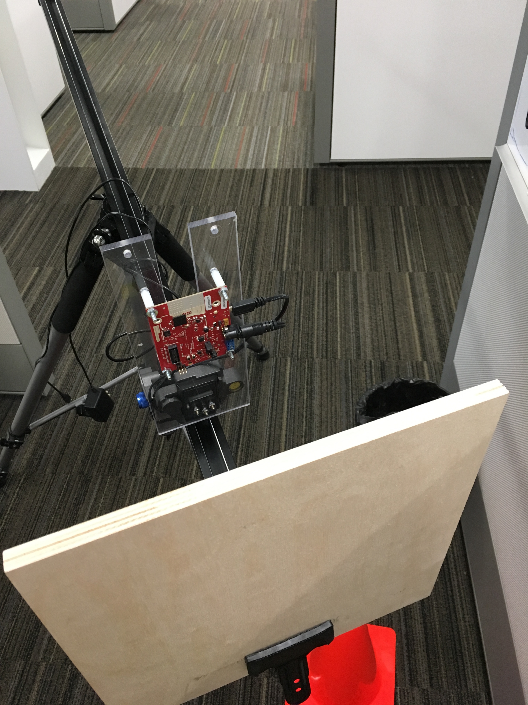
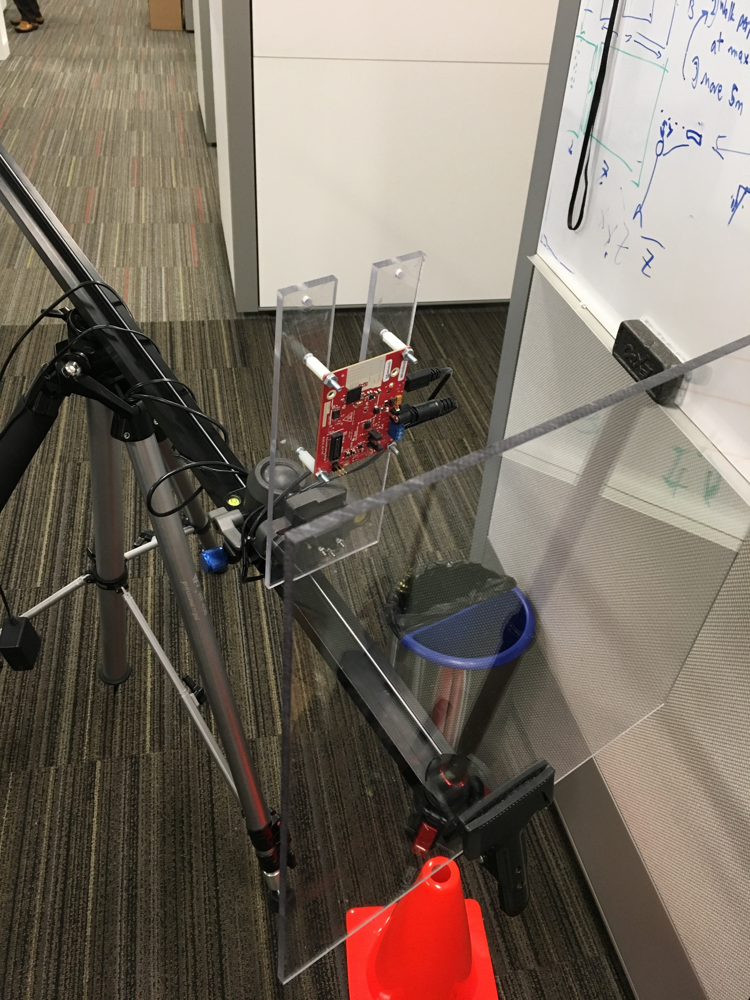
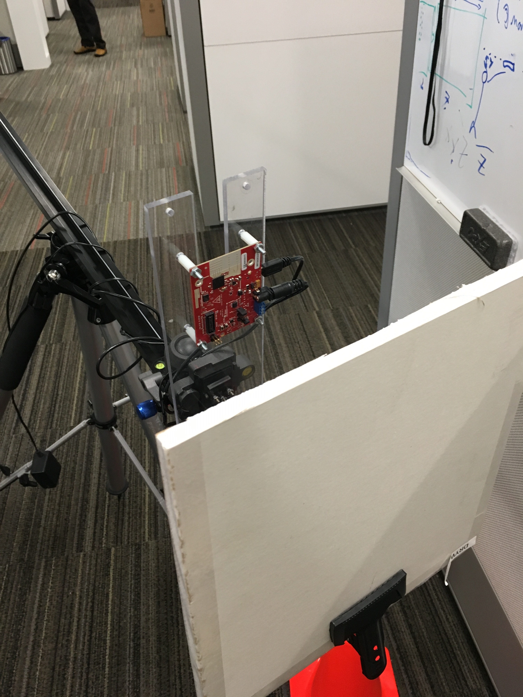
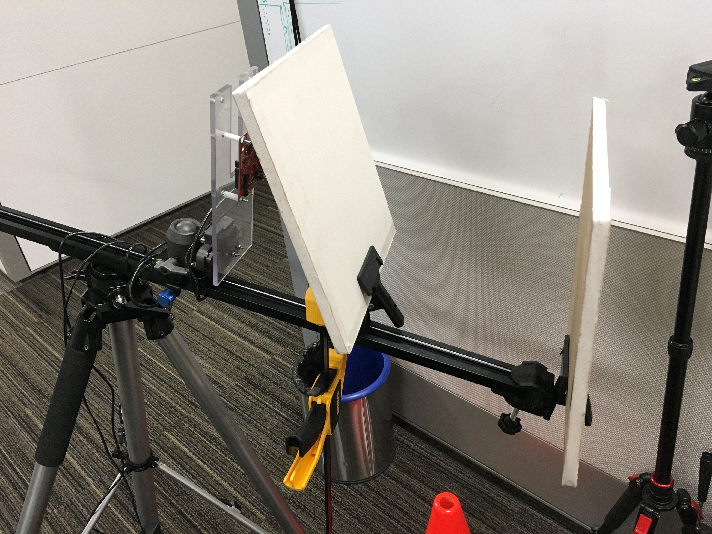
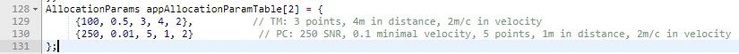

Introduction
The objective of this experiment is to evaluate the ability of TI mmWave Sensor to detect and count people through various materials. The experiment was performed inside a conference room, where multiple people entered and exited the room while the People Counting software was running.
Setup
The following setup was implemented for conference room with the IWR1642BOOST EVM impeded by a different sheet of material. Three materials were tested plastic, drywall, and wood.
Hardware Setup:
- This experiment was conducted inside a small conference room, approximately 3m by 3m.
- The IWR1642BOOST was mounted on top of a tripod.
- The tripod was placed in the doorway of the conference room, which is in the corner.
- The EVM was tilted down about 15 degrees to maximize the area of room inside the EVM's field of view.
The People Counting Demo was run in five different scenarios:
Control Test 1 Test 2 Test 3 Test 4 Obstruction Type No Obstruction Birch Plywood Plexiglas Drywall (1 Layer) Drywall (2 Layers) Picture 




Obstruction Thickness 1/2 inch (1.27 cm) thick 1/4 inch (0.635 cm) thick 1/2 inch (1.27 cm) thick 1/2 inch (1.27 cm) thick per layer Distance from EVM 6 inches 6 inches 6 inches 6 inches
Software Setup:
- The IWR1642BOOST EVM was running People Counting firmware available in the mmWave Industrial Toolbox.
- The People Counting Display can be found in the mmWave Industrial Toolbox. This GUI requires Matlab 2017b run-time, or a Matlab 2017b license.
Procedure
Before the experiment began, the People Counting demo was tuned for the location:
- The software was setup as described in the User's Guide available in the project folder or TI-Resource Explorer.
- The size of the room, as well as the angle of the EVM relative to the back wall are input into the GUI. The angle of the EVM is also changed in the chirp configuration.
- We tuned the required SNR (Signal to Noise Ratio) in the Allocation Parameters section of the People counting code. This can be find in task_app.c under MSS in the project folder. This change was made after observing the initial performance of the demo with plywood obstruction.. The threshold was lowered to 200 SNR. This change did not cause adverse performance in any other scenario, so all tests were performed with the lower 200 SNR threshold.

The experiment was conducted as follows:
- One person (the proctor) sits in the room and begins the recording.
- The proctor calls for two more participants to enter the room.
- The other two participants enter one by one.
- Once all the participants have entered the room, the recording is ended.
- This is repeated for each scenario.
During the course of the experiment, the People Counting software was left running. We did not pause the software to tune any parameters after the initial tuning.
Results
Results for this experiment were generally favorable with minimal amounts of interference due to the obstruction. However, the plywood proved the most difficult to detect objects through. We tuned the minimum required SNR before the experiment to account for that. The double drywall scenario created some reflections noticable in the video as well.
Control (No obstruction)
You can see the performance of the tracking software under normal conditions. There is one participant out of frame, one sitting in the chair, and one who enters through the door way. The software successfully detects all three participants.

Birch Plywood Obstruction
The plywood caused difficulty for the tracker because it lowered the SNR of the point cloud. We were able to tune the tracker to properly track the participants by lowering the required SNR threshold form 250 to 200 in the Allocation Parameters section of the People counting code. By lowering this threshold, the tracker could classify point clouds with lower cumulative SNRs as people.

Plexiglas Obstruction
The plexiglas obstruction had no noticable effect on the performance of the people counting software.

Drywall Obstruction
The single piece of drywall had no noticable impact on the performance of the tracking software.

Two Layers of Drywall as Obstruction
Two pieces of drywall caused some poor behavior from the tracker. As the first participant enters the doorway, he is tracked before entering the room, despite being out of the field of view of the EVM. The tracker creates another track when the participant fully enters the room, leaving a ghost track for a few seconds before determining no human is there. The second layer of drywall caused an increase in the number of reflections, leading to this phenomenon. Also notice the seated participant is dropped by the tracker because he was still enough to appear as a static object. The tracking software consciously ignores static objects to avoid classifying tables and chairs as people. Note that he is picked back up by the tracker after moving.

Summary
| Test 1 | Test 2 | Test 3 | Test 4 | |
|---|---|---|---|---|
| Obstruction Type | Birch Plywood | Plexiglas | Drywall (1 Layer) | Drywall (2 Layers) |
| Results | Performance was maintained after lowering SNR threshold to 200 from 250. | Performance was maintained. | Performance was maintained. | Ghosting. Second layer of drywall created enough reflections to cause false detection. This can be fixed with more tuning. |
Conclusion
- This demonstrates how an application could creatively use the penetration capability of mmWave technlogy to count and track people on the other side of a wall or behind a sheet of plastic. This can enable more creative installations and applications of people counting and motion detection systems such as those that are hidden from view or protected from the environment.
- The ability to tune the People Counting Software to improve performance with the plywood obstruction demonstrates the ability of mmWave technology to be quickly adapted to a new environment.